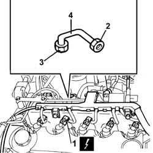

1060F36 PIPES (all) from fuel MANIFOLD to INJECTORS - R.R.
- Path
- Procedures > 10 ENGINE > 1060 DIESEL FUEL INJECTION SYSTEM > 1060F INJECTORS AND LINES > 1060F36 PIPES (all) from fuel MANIFOLD to INJECTORS - R.R.
- Kind
- repair procedure (removal / refitting; the operation number is the code)
- Applies to
- engines: 2.4 JTD 10V; all production periods
- Interactive page
- https://sloeber94.github.io/elrnDB-lThss/en/#/100685
Applies to: all engines; all production periods
 Removing
Removing
 Refitting
RefittingSee in Op. 1016A10
- Disconnect the negative battery terminal.
1. Disconnect the electrical connections for the injectors.
 | Description | Connector |
|---|---|---|
1 | Injector | N070A |
| Description | Connector |
|---|---|---|
1 | Injector | N070B |
| Description | Connector |
|---|---|---|
1 | Climate control sytem control unit | M070C |
| Description | Connector |
|---|---|---|
1 | Injector | N070D |
| Description | Connector |
|---|---|---|
1 | Injector | N070E |
2. Undo the pipe connectors from the injectors.
3. Undo the pipe connectors from the single fuel manifold.
4. Remove the pipes connecting the fuel manifold and the injectors.

Applies to: all engines; all production periods
Refitting
Removing- Fit the new pipes from the manifold to the injectors.
- Tighten the pipe connectors on the return manifold and on the injectors to torque.
 | Value - daNm | Fastening | Component | Ø |
|---|---|---|---|---|
. | 2 | Connectors | PIPE FUEL MANIFOLD TO INJECTORS | M12X1.5 |
- Connect the electrical connections for the injectors.
| Description | Connector |
|---|---|---|
. | Injector | N070A |
| Description | Connector |
|---|---|---|
. | Injector | N070B |
| Description | Connector |
|---|---|---|
. | Injector | N070C |
| Description | Connector |
|---|---|---|
. | Injector | N070D |
| Description | Connector |
|---|---|---|
. | Injector | N070E |
See in Op. 1016A10
- Connect the negative battery terminal.